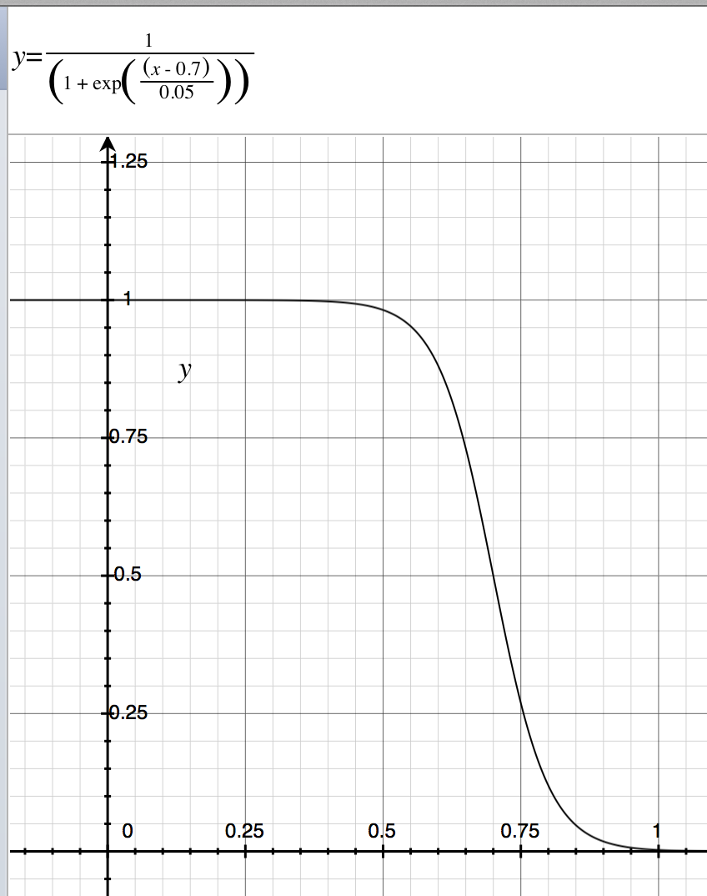

Export N to ENM
This function is used to sample presences/occurrences within an N, either randomly or with a sampling bias via setting different parameters.
Figure 1. The menu for this function.
Figure 2. "Select N(s):" Select an N to export.
"Output format:" Select the format which the output can be used in different ENMs.
"Species label:" A label for the selected N.
"Number of repetitions:" The number of repetitions to sampling.
"Sample points(%)/Number:" The number of occurrences be resampled. If the checkbox 'Number' is checked, the label changes to
'Number', and the filled number in the textfield means the number of the occurrences be resampled. If the checkbox 'Number'
is not checked, it means you want to sample X% from all the occurrences. The label next to the textfield shows the exact number
of occurrence to be sampled.
"Export method:" "threshold" or "probability". If "threshold", then NicheA selects occurrences randomly
according to the threshold beta. If "probability", then probabilities are converted according to a logistic
function of threshold beta and slope alpha. An occurrence with a high probability has more opportunities to be picked as
presence. The text below interpret the export method/beta/alpha in detail.
"Select folder:" Select a folder to save the result.
The dialog to select an N to export, and set up the parameters.
Figure 3. A result when select 'threshold' method, and set beta to 'random' in Fig.2.
NicheA samples inside of the suitable area randomly without any bias.
Figure 4. A result when select 'threshold' method, and set beta to '0.7' in Fig.2.
NicheA samples inside of the suitable area which suitable no lower than 0.7 randomly.

Figure 5. A result when select 'probability' method,
and set beta to '0.7' and alpha to '-0.05' in Fig.2.
NicheA convert the probability according to a logistic
function of threshold beta and slope alpha (Fig.6), and samples based on the converted probability.
The areas with high probability contain more occurrence, vice versa.
Figure 6. The curve of the logistic function used in Fig.5 .
Figure 7. A result when select 'probability' method,
and set beta to '0.7' and alpha to '0.05' in Fig.2.
NicheA convert the probability according to a logistic
function of threshold beta and slope alpha (Fig.8), and samples based on the converted probability.
Because we set up alpha with a positive value, the low probability was convert to a high value. Then we
got an opposite results of Fig.5. The areas with high probability contain less occurrence.
When alpha is provided a positive value, we will show a prompt dialog to make sure this setting (Fig.9).
Figure 8. The curve of the logistic function used in Fig.7 .

Figure 9. NicheA launch a prompt dialog when user set up a positive value to alpha.